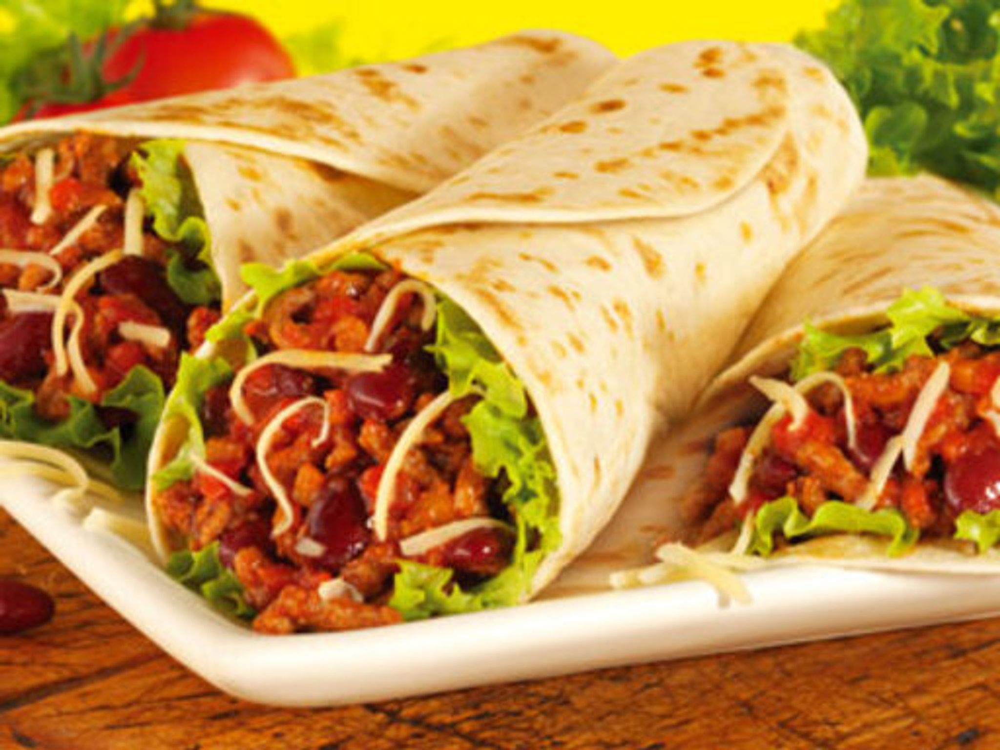

- Flour tortillas - 4 large
- Ground beef - 1 lb (450g)
- Onion - 1 medium, chopped
- Garlic - 2 cloves, minced
- Black beans - 1 can (15 oz), drained and rinsed
- Cooked rice - 1 cup
- Shredded cheddar cheese - 1 cup
- Salsa - 1/2 cup
- Sour cream - 1/2 cup
- Chopped fresh cilantro - 1/4 cup
- Ground cumin - 1 teaspoon
- Chili powder - 1/2 teaspoon
- Salt - to taste
- Vegetable oil - 1 tablespoon
|
- In a large skillet, heat vegetable oil over medium-high heat.
- Add chopped onion and minced garlic. Cook until onions are translucent.
- Add ground beef, ground cumin, chili powder, and salt. Cook until beef is browned and cooked through.
- Stir in black beans and cooked rice. Cook for another 2-3 minutes until heated through.
- Warm flour tortillas in a microwave or skillet according to package instructions.
- Divide the beef and bean mixture evenly among the tortillas.
- Top each tortilla with shredded cheddar cheese, salsa, sour cream, and chopped cilantro.
- Roll up each tortilla tightly to form a burrito.
- Serve immediately, whole or sliced in half, with additional salsa and sour cream on the side if desired.
|

|